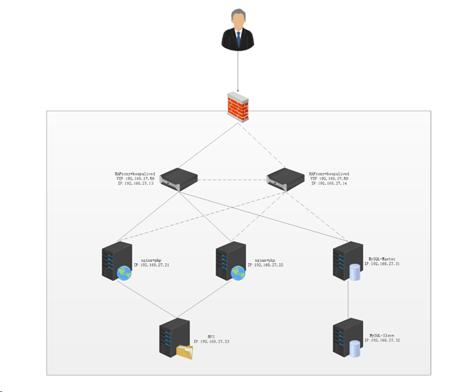

企业级应用系统高可用部署
WordPress是使用PHP语言开发的博客平台，用户可以在支持PHP和MySQL数据库的服务器上架设属于自己的网站。也可以把 WordPress当作一个内容管理系统（CMS）来使用。WordPress 功能强大，插件众多，易于扩充功能。安装使用都非常方便。本次搭建wordpress高可用平台，要求采用高可用、负载均衡、数据库主从、nfs共享存储等技术来部署wordpress高可用网站。

初始化
所有主机进行初始化配置。
1 2 3 4 5 6 7 8 9 10 11 12 13 [root@haproxy1 ~]# cat /etc/hosts 192.168.27.13 haproxy1 192.168.27.14 haproxy2 192.168.27.21 web1 192.168.27.22 web2 192.168.27.23 nfs 192.168.27.31 mysql-master 192.168.27.32 mysql-slave [root@haproxy1 ~]# ssh-keygen [root@haproxy1 ~]# for i in haproxy1 haproxy2 web1 web2 nfs mysql-master mysql-slave;do ssh-copy-id root@$i;done
1 2 3 4 5 [root@haproxy1 ~]# systemctl disable --now firewalld [root@haproxy1 ~]# setenforce 0 [root@haproxy1 ~]# echo "setenforce 0" >> /etc/rc.local [root@haproxy1 ~]# chmod +x /etc/rc.local
安装配置keepalived高可用
在两台haproxy服务器上使用yum安装keepalived软件，完成相关配置，设置VIP启动keepalived。
1 2 3 4 5 6 7 8 9 10 11 12 13 14 15 16 17 18 19 20 21 22 23 24 25 26 27 28 29 30 31 32 33 34 35 36 37 38 39 [root@haproxy1 ~]# yum -y install keepalived [root@haproxy1 ~]# vim /etc/keepalived/keepalived.conf ! Configuration File for keepalived global_defs { notification_email { acassen@firewall.loc failover@firewall.loc sysadmin@firewall.loc } notification_email_from Alexandre.Cassen@firewall.loc smtp_server 192.168.27.1 smtp_connect_timeout 30 router_id haproxy1 # 修改 vrrp_iptables # 添加 vrrp_skip_check_adv_addr vrrp_strict vrrp_garp_interval 0 vrrp_gna_interval 0 } vrrp_instance VI_1 { state MASTER interface ens32 # 修改 virtual_router_id 51 priority 100 advert_int 1 authentication { auth_type PASS auth_pass 1111 } virtual_ipaddress { 192.168.27.50 # 添加 } } [root@haproxy1 ~]# systemctl start keepalived.service [root@haproxy1 ~]# systemctl enable keepalived.service
1 2 3 4 5 6 7 8 9 10 11 12 13 14 15 16 17 18 19 20 21 22 23 24 25 26 27 28 29 30 31 32 33 34 35 36 37 38 39 [root@haproxy2 ~]# yum -y install keepalived [root@haproxy2 ~]# vim /etc/keepalived/keepalived.conf ! Configuration File for keepalived global_defs { notification_email { acassen@firewall.loc failover@firewall.loc sysadmin@firewall.loc } notification_email_from Alexandre.Cassen@firewall.loc smtp_server 192.168.200.1 smtp_connect_timeout 30 router_id haproxy2 # 修改 vrrp_iptables # 添加 vrrp_skip_check_adv_addr vrrp_strict vrrp_garp_interval 0 vrrp_gna_interval 0 } vrrp_instance VI_1 { state BACKUP # 修改 interface ens32 # 修改 virtual_router_id 51 priority 50 advert_int 1 authentication { auth_type PASS auth_pass 1111 } virtual_ipaddress { 192.168.27.50 } } [root@haproxy2 ~]# systemctl start keepalived.service [root@haproxy2 ~]# systemctl enable keepalived.service
1 2 3 4 5 6 7 8 9 10 11 12 13 14 15 [root@haproxy1 ~]# ip a 1: lo: <LOOPBACK,UP,LOWER_UP> mtu 65536 qdisc noqueue state UNKNOWN group default qlen 1000 link/loopback 00:00:00:00:00:00 brd 00:00:00:00:00:00 inet 127.0.0.1/8 scope host lo valid_lft forever preferred_lft forever inet6 ::1/128 scope host valid_lft forever preferred_lft forever 2: ens32: <BROADCAST,MULTICAST,UP,LOWER_UP> mtu 1500 qdisc pfifo_fast state UP group default qlen 1000 link/ether 00:0c:29:c6:75:65 brd ff:ff:ff:ff:ff:ff inet 192.168.27.13/24 brd 192.168.27.255 scope global noprefixroute ens32 valid_lft forever preferred_lft forever inet 192.168.27.50/32 scope global ens32 # 显示VIP valid_lft forever preferred_lft forever inet6 fe80::91bf:3ec9:f36:8bb8/64 scope link noprefixroute valid_lft forever preferred_lft forever
安装haproxy负载均衡
将haproxy-master.zip软件包以root用户上传至在两台haproxy服务器上的/root目录，解压haproxy-master.zip，解压编译安装，完成相关的配置，运行haproxy
haproxy1和haproxy2操作基本相同
安装 1 2 3 4 5 6 7 8 9 10 11 12 13 14 15 16 17 18 19 20 21 [root@haproxy1 ~]# yum -y install make gcc pcre-devel bzip2-devel openssl-devel systemd-devel unzip [root@haproxy1 ~]# useradd -r -M -s /sbin/nologin haproxy [root@haproxy1 ~]# scp haproxy-master.zip haproxy2:/root/ [root@haproxy1 ~]# unzip haproxy-master.zip [root@haproxy1 ~]# cd haproxy-master/ [root@haproxy1 haproxy-master]# make clean [root@haproxy1 haproxy-master]# make -j $(grep 'processor' /proc/cpuinfo |wc -l) TARGET=linux-glibc USE_OPENSSL=1 USE_ZLIB=1 USE_PCRE=1 USE_SYSTEMD=1 [root@haproxy1 haproxy-master]# make install PREFIX=/usr/local/haproxy [root@haproxy1 haproxy-master]# echo "export PATH=/usr/local/haproxy/sbin:$PATH">/etc/profile.d/haproxy.sh [root@haproxy1 haproxy-master]# . /etc/profile.d/haproxy.sh [root@haproxy1 haproxy-master]# which haproxy /usr/local/haproxy/sbin/haproxy
配置内核参数 1 2 3 4 5 [root@haproxy1 ~]# echo 'net.ipv4.ip_nonlocal_bind = 1' >> /etc/sysctl.conf [root@haproxy1 ~]# echo 'net.ipv4.ip_forward = 1' >> /etc/sysctl.conf [root@haproxy1 ~]# sysctl -p net.ipv4.ip_nonlocal_bind = 1 net.ipv4.ip_forward = 1
创建启动脚本 1 2 3 4 5 6 7 8 9 10 11 12 13 14 [root@haproxy1 ~]# vim /lib/systemd/system/haproxy.service [Unit] Description=HAProxyLoad Balancer After=syslog.targetnetwork.target [Service] ExecStartPre=/usr/local/haproxy/sbin/haproxy -f /etc/haproxy/haproxy.cfg -c -q ExecStart=/usr/local/haproxy/sbin/haproxy -Ws -f /etc/haproxy/haproxy.cfg -p /usr/local/haproxy/run/haproxy.pid ExecReload=/bin/kill -USR2 $MAINPID [Install] WantedBy=multi-user.target
生成配置文件 1 2 3 4 5 6 7 8 9 10 11 12 13 14 15 16 17 18 19 20 21 22 23 24 25 26 27 28 29 30 31 32 33 34 35 [root@haproxy1 ~]# mkdir /etc/haproxy [root@haproxy1 ~]# vim /etc/haproxy/haproxy.cfg global maxconn 100000 chroot /usr/local/haproxy # stats socket /var/lib/haproxy/haproxy.sock mode 600 level admin uid 99 gid 99 daemon cpu-map 1 0 cpu-map 2 1 cpu-map 3 2 cpu-map 4 3 pidfile /usr/local/haproxy/run/haproxy.pid log 127.0.0.1 local3 info defaults option http-keep-alive option forwardfor maxconn 100000 mode http timeout connect 300000ms timeout client 300000ms timeout server 300000ms listen stats mode http bind 0.0.0.0:9999 stats enable log global stats uri /haproxy-status stats auth haadmin:q1w2e3r4ys [root@haproxy1 ~]# mkdir /usr/local/haproxy/run
启动服务 1 2 3 4 5 6 7 8 9 10 11 12 13 14 15 16 17 18 19 [root@haproxy1 ~]# systemctl start haproxy.service [root@haproxy1 ~]# systemctl enable haproxy.service [root@haproxy1 ~]# systemctl status haproxy.service ● haproxy.service - HAProxyLoad Balancer Loaded: loaded (/usr/lib/systemd/system/haproxy.service; enabled; vendor preset: disabled) Active: active (running) since 五 2023-06-23 17:52:44 CST; 10s ago Main PID: 12588 (haproxy) CGroup: /system.slice/haproxy.service ├─12588 /usr/local/haproxy/sbin/haproxy -Ws -f /etc/haproxy/haproxy.cfg -p /usr/local/hapr... └─12592 /usr/local/haproxy/sbin/haproxy -Ws -f /etc/haproxy/haproxy.cfg -p /usr/local/hapr... 6月 23 17:52:44 haproxy1 systemd[1]: Starting HAProxyLoad Balancer... 6月 23 17:52:44 haproxy1 systemd[1]: Started HAProxyLoad Balancer. 6月 23 17:52:44 haproxy1 haproxy[12588]: [NOTICE] (12588) : haproxy version is 2.7-dev4-16972e19d 6月 23 17:52:44 haproxy1 haproxy[12588]: [NOTICE] (12588) : path to executable is /usr/local/h...roxy 6月 23 17:52:44 haproxy1 haproxy[12588]: [ALERT] (12588) : config : parsing [/etc/haproxy/hap...ing. 6月 23 17:52:44 haproxy1 haproxy[12588]: [NOTICE] (12588) : New worker (12592) forked 6月 23 17:52:44 haproxy1 haproxy[12588]: [NOTICE] (12588) : Loading success. Hint: Some lines were ellipsized, use -l to show in full.
配置主从数据库
将mysql-5.6.33-linux-glibc2.5-x86_64.tar.gz软件包以root用户上传至两台数据库服务器的/root目录，解压并配置数据库，完成主从数据库的配置，运行mysql。
安装启动服务
1 2 3 4 5 6 7 8 9 10 11 12 13 14 15 16 17 18 19 20 21 22 23 24 25 26 27 28 29 30 31 32 33 [root@mysql-master ~]# tar xf mysql-5.6.33-linux-glibc2.5-x86_64.tar.gz [root@mysql-master ~]# cp -r mysql-5.6.33-linux-glibc2.5-x86_64 /usr/local/mysql [root@mysql-master ~]# groupadd mysql [root@mysql-master ~]# useradd -g mysql mysql [root@mysql-master ~]# cd /usr/local/mysql/ [root@mysql-master mysql]# mkdir ./data/mysql [root@mysql-master mysql]# chown -R mysql:mysql /usr/local/mysql/ [root@mysql-master mysql]# yum -y install autoconf libaio [root@mysql-master mysql]# ./scripts/mysql_install_db --user=mysql --datadir=/usr/local/mysql/data/mysql [root@mysql-master mysql]# cp support-files/mysql.server /etc/init.d/mysqld [root@mysql-master mysql]# chmod 755 /etc/init.d/mysqld [root@mysql-master mysql]# cp support-files/my-default.cnf /etc/my.cnf cp：是否覆盖"/etc/my.cnf"？ y # 修改启动脚本 [root@mysql-master mysql]# vi /etc/init.d/mysqld basedir=/usr/local/mysql/ datadir=/usr/local/mysql/data/mysql # 启动服务 [root@mysql-master mysql]# service mysqld start # 测试连接 [root@mysql-master mysql]# ./bin/mysql -uroot mysql> # 加入环境变量 [root@mysql-master mysql]# echo "export PATH=$PATH:/usr/local/mysql/bin" >> /etc/profile [root@mysql-master mysql]# source /etc/profile
搭建主从
1 2 3 4 5 6 7 8 9 10 11 12 13 14 15 16 17 18 19 20 21 22 [root@mysql-master ~]# vim /etc/my.cnf [mysqld] datadir=/usr/local/mysql/data/mysql log-bin=/usr/local/mysql/bin/mysql binlog-format=row server-id=1 [root@mysql-master ~]# service mysqld restart [root@mysql-master ~]# mysql -e "GRANT REPLICATION SLAVE ON *.* TO 'repluser'@'192.168.27.%' IDENTIFIED BY '111111';" # 这一步必须执行，不执行最后web页面会报数据库连接错误 mysql> grant all on *.* to root@'%' identified by '' ; Query OK, 0 rows affected (0.00 sec) [root@mysql-master ~]# mysql -e "SHOW MASTER LOGS;" +--------------+-----------+ | Log_name | File_size | +--------------+-----------+ | mysql.000001 | 333 | +--------------+-----------+
1 2 3 4 5 6 7 8 9 10 11 12 13 14 15 16 17 18 19 20 21 22 23 24 25 26 27 28 29 30 31 32 33 34 35 36 37 38 39 40 41 42 43 44 45 46 47 48 49 50 51 52 53 54 55 56 57 58 59 60 61 62 63 64 65 66 67 68 69 70 71 [root@mysql-slave ~]# vim /etc/my.cnf [mysqld] server-id=2 read-only [root@mysql-slave ~]# service mysqld restart [root@mysql-slave ~]# mysql -uroot mysql> CHANGE MASTER TO MASTER_HOST='192.168.27.31' , MASTER_USER='repluser' , MASTER_PASSWORD='111111' , MASTER_PORT=3306, MASTER_LOG_FILE='mysql.000001' , MASTER_LOG_POS=333; Query OK, 0 rows affected, 2 warnings (0.01 sec) mysql> start slave; Query OK, 0 rows affected (0.00 sec) mysql> show slave status\G *************************** 1. row *************************** Slave_IO_State: Waiting for master to send event Master_Host: 192.168.27.31 Master_User: repluser Master_Port: 3306 Connect_Retry: 60 Master_Log_File: mysql.000001 Read_Master_Log_Pos: 333 Relay_Log_File: mysql-slave-relay-bin.000002 Relay_Log_Pos: 279 Relay_Master_Log_File: mysql.000001 Slave_IO_Running: Yes Slave_SQL_Running: Yes Replicate_Do_DB: Replicate_Ignore_DB: Replicate_Do_Table: Replicate_Ignore_Table: Replicate_Wild_Do_Table: Replicate_Wild_Ignore_Table: Last_Errno: 0 Last_Error: Skip_Counter: 0 Exec_Master_Log_Pos: 333 Relay_Log_Space: 458 Until_Condition: None Until_Log_File: Until_Log_Pos: 0 Master_SSL_Allowed: No Master_SSL_CA_File: Master_SSL_CA_Path: Master_SSL_Cert: Master_SSL_Cipher: Master_SSL_Key: Seconds_Behind_Master: 0 Master_SSL_Verify_Server_Cert: No Last_IO_Errno: 0 Last_IO_Error: Last_SQL_Errno: 0 Last_SQL_Error: Replicate_Ignore_Server_Ids: Master_Server_Id: 1 Master_UUID: cfeabf9b-11ad-11ee-b0cd-000c295d0339 Master_Info_File: /usr/local/mysql/data/mysql/master.info SQL_Delay: 0 SQL_Remaining_Delay: NULL Slave_SQL_Running_State: Slave has read all relay log; waiting for the slave I/O thread to update it Master_Retry_Count: 86400 Master_Bind: Last_IO_Error_Timestamp: Last_SQL_Error_Timestamp: Master_SSL_Crl: Master_SSL_Crlpath: Retrieved_Gtid_Set: Executed_Gtid_Set: Auto_Position: 0 1 row in set (0.00 sec)
安装配置web服务器
将nginx-1.14.2.tar.gz和php-7.2.12.tar.gz软件包以root用户上传至两台web服务器的/root目录，解压并编译运行，完成相关配置。
安装nginx
两节点操作相同
1 2 3 4 5 6 7 8 9 10 11 12 13 14 15 16 17 18 19 20 21 22 23 24 25 26 27 28 29 30 31 32 33 [root@web1 ~]# yum install -y gcc gcc-c++ glibc glibc-devel pcre pcre-devel openssl openssl-devel systemd-devel bzip2 vim lrzsz tree screen lsof tcpdump wget ntpdate net-tools iotop bc zip unzip nfs-utils expat-devel bison bison-devel zlib-devel libcurl-devel libarchive-devel boostdevel cmake ncurses-devel gnutls-devel libxml2-devel libevent-devel libaio-devel [root@web1 ~]# tar zxvf nginx-1.14.2.tar.gz [root@web1 ~]# cd nginx-1.14.2 [root@web1 nginx-1.14.2]# useradd nginx [root@web1 nginx-1.14.2]# ./configure --prefix=/usr/local/nginx --user=nginx --group=nginx --with-http_ssl_module --with-http_v2_module --with-http_realip_module --with-http_stub_status_module --with-http_gzip_static_module --with-pcre --with-stream --with-stream_ssl_module --with-stream_realip_module [root@web1 nginx-1.14.2]# make && make install # 建立软链接 [root@web1 nginx-1.14.2]# ln -s /usr/local/nginx/sbin/nginx /sbin/nginx # 配置启动脚本 [root@web1 nginx-1.14.2]# vim /lib/systemd/system/nginx.service [Service] Type=forking PIDFile=/usr/local/nginx/logs/nginx.pid ExecStart=/usr/local/nginx/sbin/nginx -c /usr/local/nginx/conf/nginx.conf ExecReload=/bin/kill -s HUP $MAINPID ExecStop=/bin/kill -s TERM $MAINPID [Install] WantedBy=multi-user.target # 修改配置文件 [root@web1 nginx-1.14.2]# vim /usr/local/nginx/conf/nginx.conf user nginx; pid /usr/local/nginx/logs/nginx.pid; # 启动服务 [root@web1 nginx-1.14.2]# systemctl start nginx.service [root@web1 nginx-1.14.2]# systemctl enable nginx.service
安装php-fpm
操作相同
1 2 3 4 5 6 7 8 9 10 11 12 13 14 15 16 17 18 19 [root@web1 ~]# tar xf php-7.2.12.tar.gz [root@web1 ~]# cd php-7.2.12/ [root@web1 php-7.2.12]# ./configure --prefix=/usr/local/php --enable-mysqlnd --with-mysqli=mysqlnd --with-pdo-mysql=mysqlnd --with-openssl --with-freetype-dir --with-jpeg-dir --with-png-dir --with-zlib --with-libxml-dir=/usr --with-config-file-path=/etc --with-config-file-scan-dir=/etc/php.d --enable-mbstring --enable-xml --enable-sockets --enable-fpm --enable-maintainer-zts --disable-fileinfo [root@web1 php-7.2.12]# make && make install # 复制环境配置文件，修改时区 [root@web1 php-7.2.12]# cp php.ini-production /etc/php.ini [root@web1 php-7.2.12]# sed -i '/;date.tim/s@.*@data.timezone = "Asia/Shanghai"@' /etc/php.ini # 配置启动脚本 [root@web1 php-7.2.12]# cp sapi/fpm/init.d.php-fpm /etc/init.d/php-fpm [root@web1 php-7.2.12]# chmod +x /etc/init.d/php-fpm [root@web1 php-7.2.12]# chkconfig --add php-fpm # 复制模板配置文件 [root@web1 php-7.2.12]# cp /usr/local/php/etc/php-fpm.conf.default /usr/local/php/etc/php-fpm.conf [root@web1 php-7.2.12]# cp /usr/local/php/etc/php-fpm.d/www.conf.default /usr/local/php/etc/php-fpm.d/www.conf
配置nginx+php
操作还是相同
1 2 3 4 5 6 7 8 9 10 11 12 13 14 15 16 17 18 19 20 21 22 23 24 25 26 27 28 29 30 31 32 33 34 35 36 37 38 39 40 41 42 43 [root@web1 ~]# vim /usr/local/nginx/conf/nginx.conf # 在http { 段里添加 include /usr/local/nginx/conf/server/*.conf; # 创建新的server段配置文件 [root@web1 ~]# mkdir /usr/local/nginx/conf/server [root@web1 ~]# vim /usr/local/nginx/conf/server/mylinuxops.conf server { server_name www.mylinuxops.com; listen 80; location / { root /data/www; index index.php index.html; } location ~ \.php$ { root /data/www; fastcgi_pass 127.0.0.1:9000; fastcgi_index index.php; fastcgi_param SCRIPT_FILENAME $document_root$fastcgi_script_name; include fastcgi_params; } } # 修改php-fpm配置文件 [root@web1 ~]# vim /usr/local/php/etc/php-fpm.d/www.conf user = nginx group = nginx listen = 127.0.0.1:9000 # 重启服务 [root@web1 ~]# nginx -s reload [root@web1 ~]# service php-fpm start Starting php-fpm done # 创建测试页面 [root@web1 ~]# mkdir -p /data/www [root@web1 ~]# vim /data/www/index.php <?php phpinfo(); ?> # 打开浏览器访问测试
配置nfs服务器
1 2 3 4 5 6 7 [root@nfs ~]# yum install nfs-utils -y [root@nfs ~]# mkdir -p /data/upload [root@nfs ~]# vim /etc/exports /data/upload *(rw,no_root_squash) [root@nfs ~]# systemctl enable nfs [root@nfs ~]# systemctl start nfs
1 2 3 4 5 6 7 8 9 10 11 12 [root@mysql-master ~]# mysql -e "GRANT ALL PRIVILEGES ON wordpress.* TO 'wpuser'@'192.168.27.%' IDENTIFIED BY'111111';" [root@mysql-master ~]# mysql -e "CREATE DATABASE wordpress;" [root@mysql-master ~]# mysql -e "show databases;" +--------------------+ | Database | +--------------------+ | information_schema | | mysql | | performance_schema | | test | | wordpress | +--------------------+
1 2 3 4 5 6 7 8 9 10 11 12 13 14 15 16 17 18 19 20 21 22 23 24 25 26 27 28 29 [root@web1 ~]# tar xf wordpress-5.9.1-zh_CN.tar.gz [root@web1 ~]# cp -a wordpress/* /data/www/ cp：是否覆盖"/data/www/index.php"？ y [root@web1 ~]# cp /data/www/{wp-config-sample.php,wp-config.php} [root@web1 ~]# vim /data/www/wp-config.php /** WordPress数据库的名称 */ define('DB_NAME', 'wordpress'); /** MySQL数据库用户名 */ define('DB_USER', 'root'); /** MySQL数据库密码 */ define('DB_PASSWORD', ''); /** MySQL主机 */ define('DB_HOST', '192.168.27.50'); # 将此文件复制到server2服务器上 [root@web1 ~]# scp -r /data/www/* 192.168.27.22:/data/www/ # 分别在两台服务器上挂载nfs，将图片存储到nfs上 [root@web1 ~]# mkdir /data/www/wp-content/uploads [root@web1 ~]# mount 192.168.27.23:/data/upload /data/www/wp-content/uploads [root@web2 ~]# mkdir /data/www/wp-content/uploads [root@web2 ~]# mount 192.168.27.23:/data/upload /data/www/wp-content/uploads
配置后端web服务器和MySQL负载均衡
在两台haproxy机器上分别进行web和mysql的负载均衡配置，然后测试wordpress网站是否正常。
1 2 3 4 5 6 7 8 9 10 11 12 13 14 15 16 [root@haproxy1 ~]# vim /etc/haproxy/haproxy.cfg listen http bind 192.168.27.50:80 mode http server web1 192.168.27.21:80 check inter 3000 fall 3 rise 5 server web2 192.168.27.22:80 check inter 3000 fall 3 rise 5 listen mysql_3306 bind 192.168.27.50:3306 mode tcp server mysql 192.168.27.31:3306 check inter 3000 fall 3 rise 5 # 重启服务 [root@haproxy1 ~]# systemctl restart haproxy # 访问http://192.168.27.50,出现wordpress页面成功